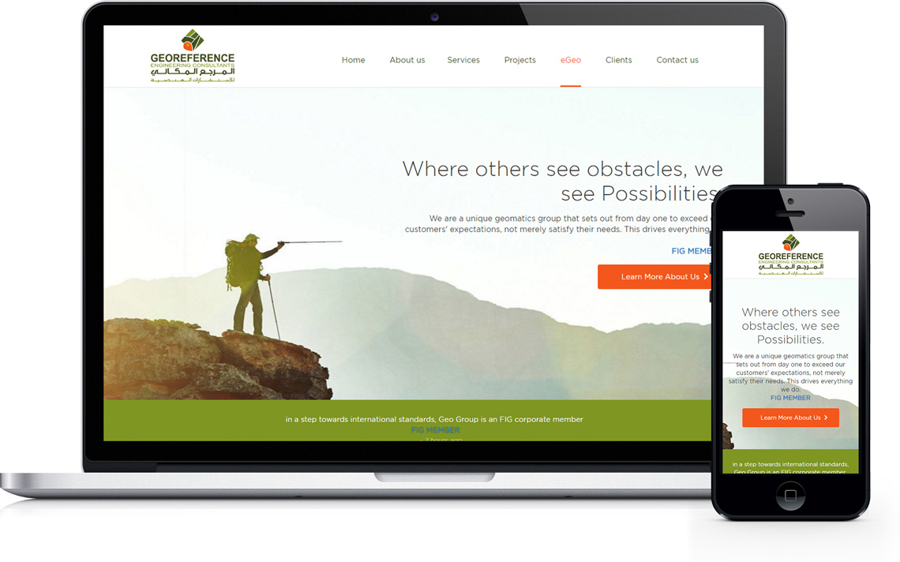

Eng, Abdullah, The Founder & the President has a Master’s Degree in Geodetic science (1980) from Ohio University in USA.Two postgraduate Diplomas from Sweden & Australia, in Cadastral Registration and (GIS).
He is a celebrated figure in all official & social circles in KSA, as well as a pioneer in the field of Geomatics in his country. Having served in the highest executive levels in Saudi government for over 38 years, former general director of surveying &mapping in ministry of municipal and rural affairs. Assistance deputy Minister for Surveying & lands and Deputy Minister for planning & programming. Eng.Abdulla has also served as lecturer at King Saud University as well as a member Board of Directors of Real-Estate Development Fund ”REDF” and Saudi Arabian Standards Organization ”SASO”.
Eng. Abdullah is an active member of (FIG) and strong believer of Geomatics role in developing a solid foundation for any informatics usage.